Hello! I'm Sinan.
Product designer based in Toronto
A sturdy, elegant table designed to flat-pack for easy transport. The piece features a cast acrylic top that conceals an original painting within its surface, creating a deeply personal art display that's integrated into daily ritual. The plywood base components can break down flat when needed. It can be fabricated using the CNC. The result is a functional piece that has a personal meaning.
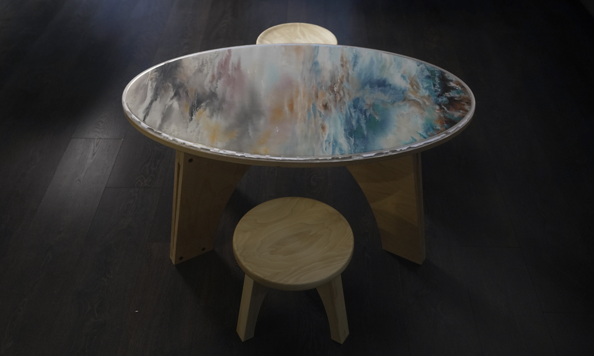
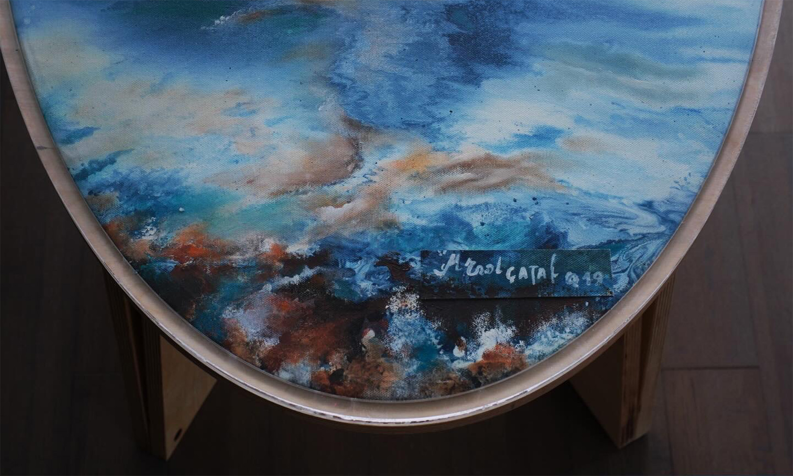
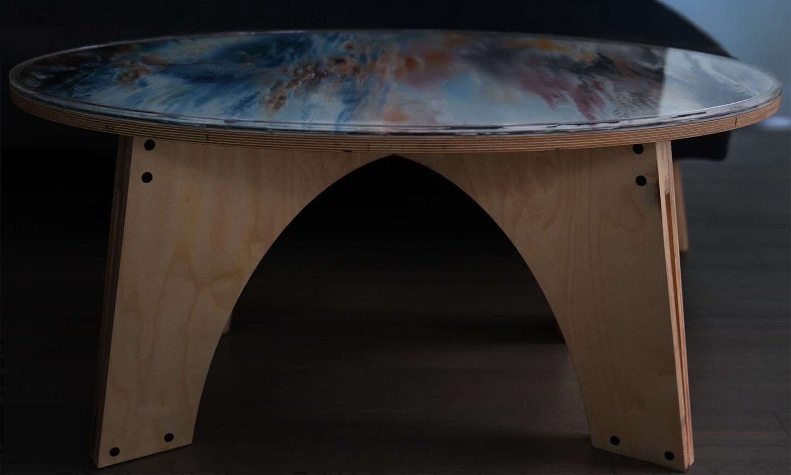
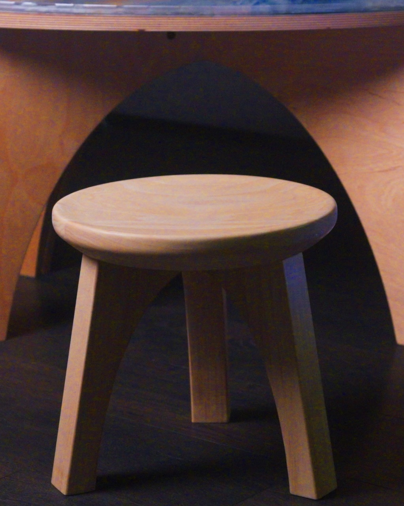
A set of ceramic mugs featuring Christopher Dresser's surface patterns created through custom mold-making techniques. I designed and fabricated molds that imprint distinctive patterns onto the ceramic surface. Using slip casting.
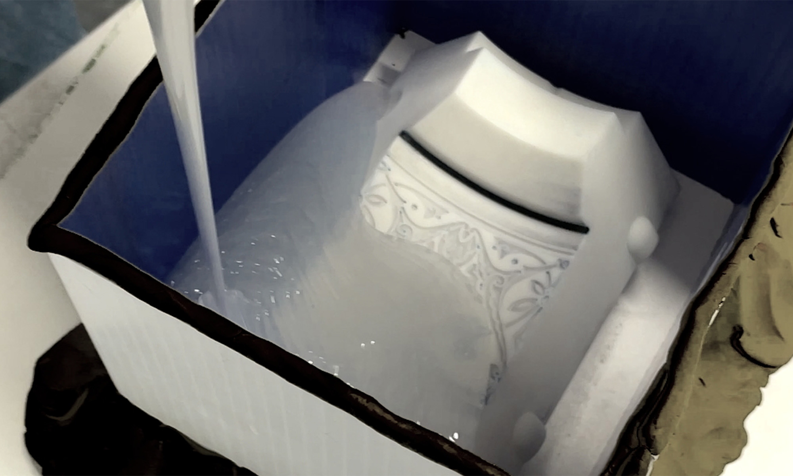
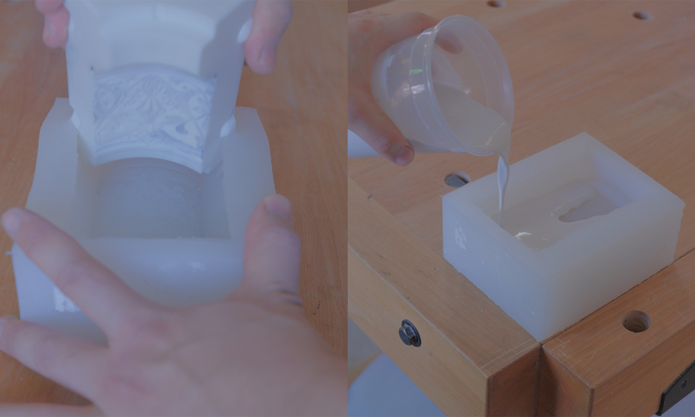
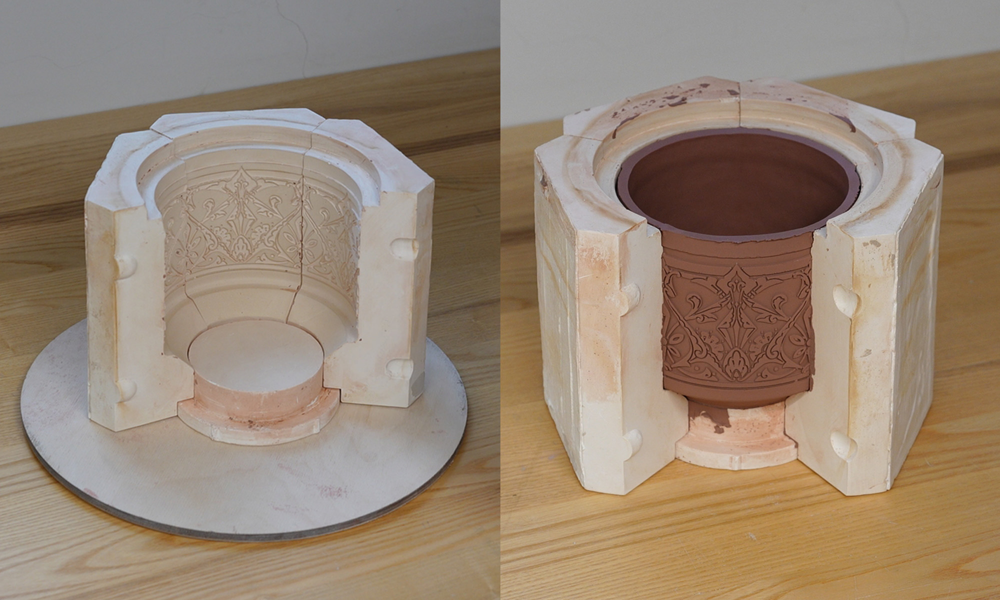
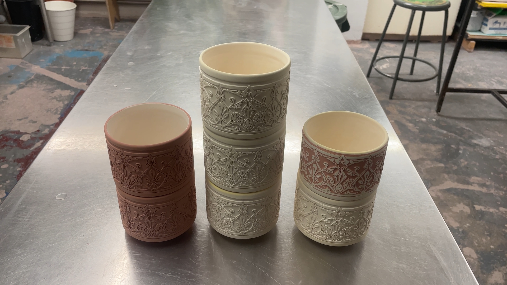
A bronze-cast base, inspired by the organic form of a mushroom, is paired with a stained-glass shade. The base was crafted using lost-wax casting, while the shade was constructed from cut glass pieces joined by soldering. The result is a warm, decorative lamp that sets the mood and atmosphere. This was an exploration piece for both bronze casting and glass.
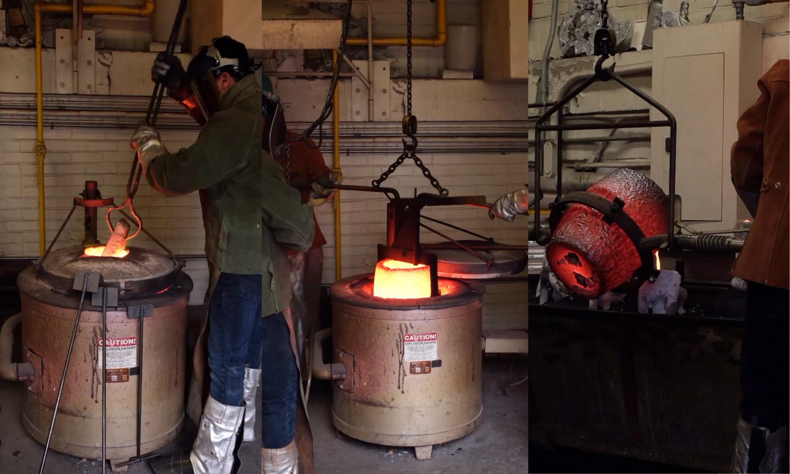
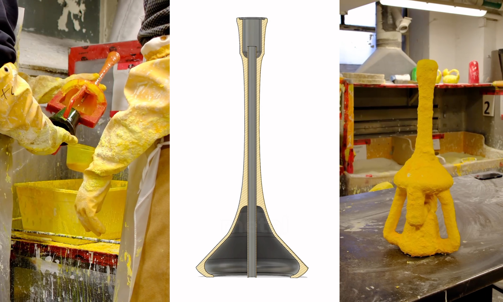
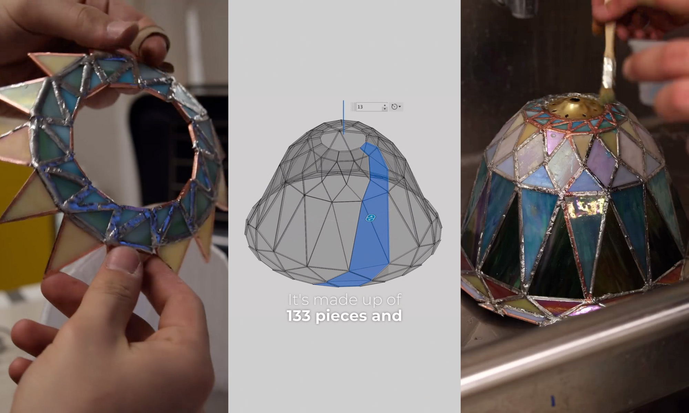
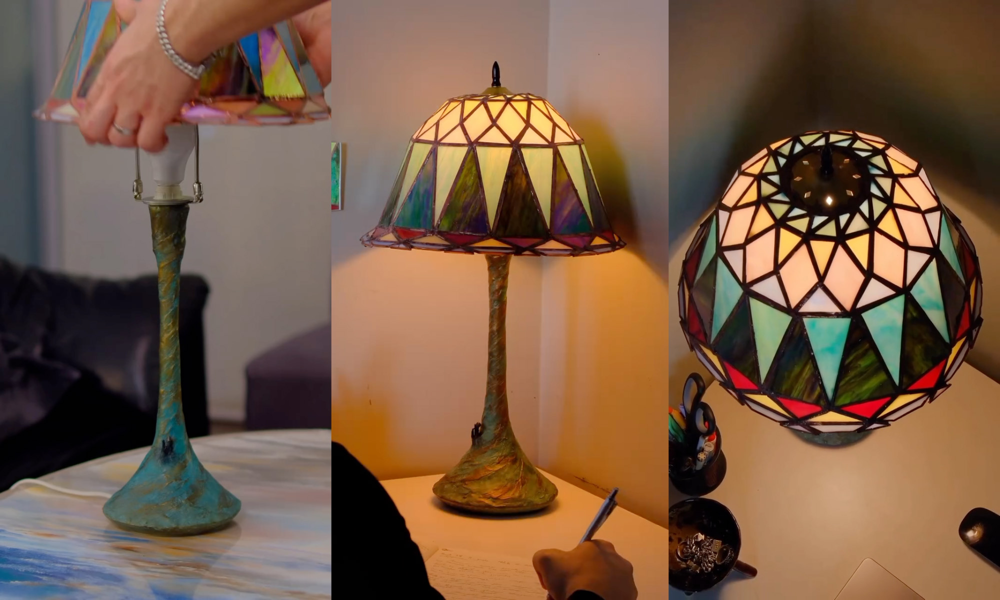
I'm a Toronto-based designer–fabricator working at the intersection of materials, making, and form. My approach is driven by understanding how materials behave and using that knowledge to shape practical, well-considered designs.
My background is in industrial design at OCAD University. I come up with designs when I'm confronted by problems in my daily life. When something doesn't work like it should, I start figuring out how to fix it in order to maximize its integration into my routine.
My goal in designing furniture is to create products that fit seamlessly into a space and fulfill their function as well as possible. There are many aspects of an object that can make it more or less suited to a specific scenario, and my goal while designing is to find that ideal solution.
One of my strengths as a designer is my experience with a variety of materials, from metal and wood to ceramics and plastics. Manufacturing products myself has given me a strong base as a designer who understands how an idea becomes a reality.
OCAD University
Product Design
Furniture Design
Material-driven furniture
efficient solutions
modularity
Toronto, Ontario
I'm always interested in discussing new projects, creative ideas, or opportunities to collaborate on meaningful design work.